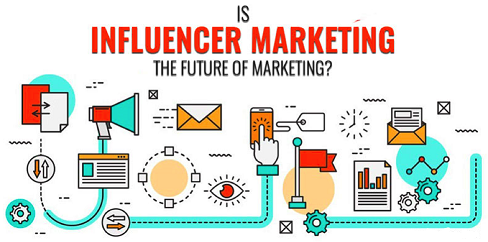

|  | Influencer marketing is a form of social media marketing involving endorsements and product placement from influencers, people and organizations who have a purported expert level of knowledge or social influence in their field. |
|---|---|
Social media are interactive computer-mediated technologies that facilitate the creation or sharing of information, ideas, career interests and other forms of expression via virtual communities and networks. |
|
Influencing skills are more than communication; they are more than negotiation; they are arguably more than persuasion. In a business setting, having influence is about getting true ‘buy in’ from colleagues, clients and bosses for a business decision or on the best way forward. |
|
Management (or managing) is the administration of an organization, whether it is a business, a not-for-profit organization, or government body. Management includes the activities of setting the strategy of an organization and coordinating the efforts of its employees (or of volunteers) to accomplish its objectives through the application of available resources, such as financial, natural, technological, and human resources. |